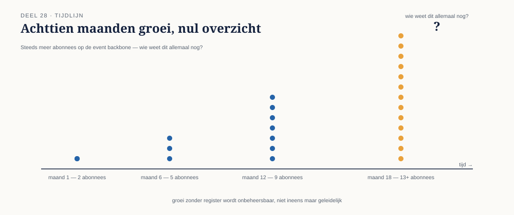

28.0 Zeventien abonnees, en niemand die ze allemaal kent
Sectie 1 van 6Achttien maanden in de Stelselovergang telt de invaar-event-backbone zeventien geregistreerde abonnees — van de vijf oorspronkelijke systemen uit deel 25 tot een groeiend aantal rapportagetools, een extern accountantskantoor dat namens DNB meekijkt, en een nieuw deelnemersportaal dat nog in ontwikkeling is. Toen het integratieteam een geplande wijziging aan het AanspraakIngevaren-event wilde doorvoeren — een uitbreiding, in principe achterwaarts-compatibel volgens de regels van deel 20 — bleek niemand met zekerheid te kunnen zeggen of alle zeventien abonnees daadwerkelijk nog actief waren, laat staan of ze allemaal het consumer-driven-contract-proces uit deel 20 consequent hadden gevolgd.
Dit is een probleem dat deel 20 op koppelingsniveau al behandelde, maar dat op de schaal en tijdsduur van de Stelselovergang een aanvullende laag vraagt: governance — niet de vraag "is deze specifieke wijziging veilig" (deel 20), maar de bredere, doorlopende vraag "wie beheert deze event backbone als geheel, over jaren, en hoe blijft die het beheer overzichtelijk naarmate het aantal abonnees groeit."
